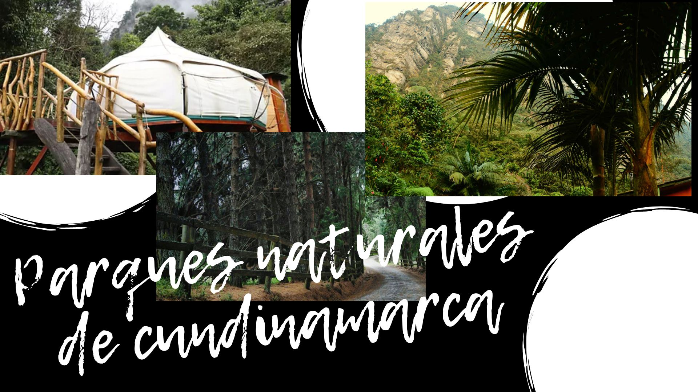

Saltar la navegación
Parque naturales de cundinamarca
Parques Naturales de Cundinamarca
Parque natual de Sumapaz
Caracteristicas generales
Hidrografia
Flora y fauna
Recomendaciones y servicios naturales
Actividades
Parque natural Los Tunos
Caracteristicas generales
Servicios
Flora y fauna
Leyenda de bochica
Actividades
Parque natural Chingaza
Caracteristicas generales
Flora y Fauna
Recomendaciones y Servicios naturales
Actividades
Servicios
Siguiente
»
Parques Naturales de Cundinamarca

Siguiente
»